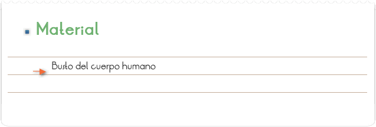
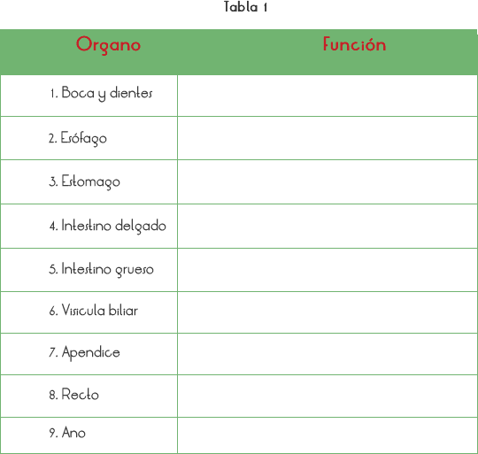
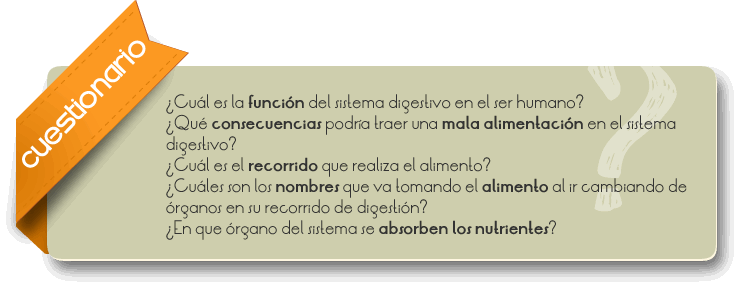
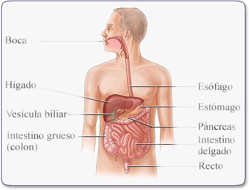

El aparato digestivo es el conjunto de órganos (boca, faringe, esófago, estómago, intestino delgado e intestino grueso) encargados del proceso de la digestión, es decir la transformación de los alimentos para que puedan ser absorbidos y utilizados por las células del organismo. La función que realiza es la de transporte (alimentos), secreción (jugos digestivos), absorción (nutrientes) y excreción mediante el proceso de defecación.
Que el alumno observe, identifique y aprenda la función de los órganos del sistema digestivo.

1. Con ayuda del profesor el alumno ira conociendo cada un de los órganos que forman el sistema digestivo del ser humano.
2. Deberá ir completando la siguiente tabla:


El aparato digestivo es el conjunto de órganos (boca, faringe, esófago, estómago, Intestino delgado e intestino grueso) encargados del proceso de la digestión, es decir la transformación de los alimentos para que puedan ser absorbidos y utilizados por las células del organismo. La función que realiza es la de transporte (alimentos), secreción (jugos digestivos), absorción (nutrientes) y excreción mediante el proceso de defecación. El proceso de la digestión es el mismo en todos los animales: transformar los glúcidos, lípidos y proteínas en unidades más sencillas, gracias a las enzimas digestivas, para que puedan ser absorbidas y transportadas por la sangre.
